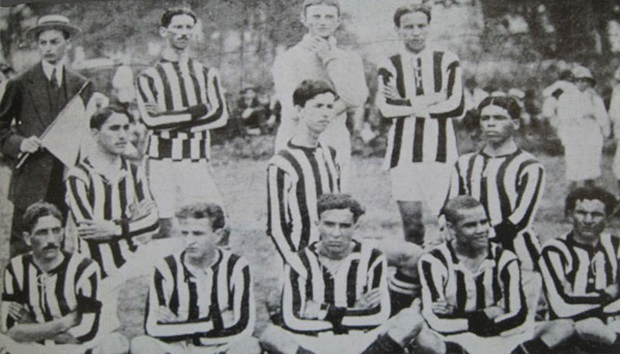
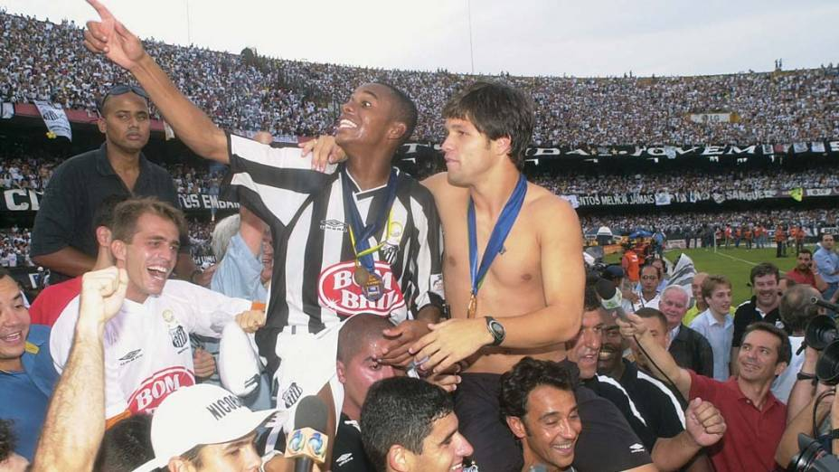
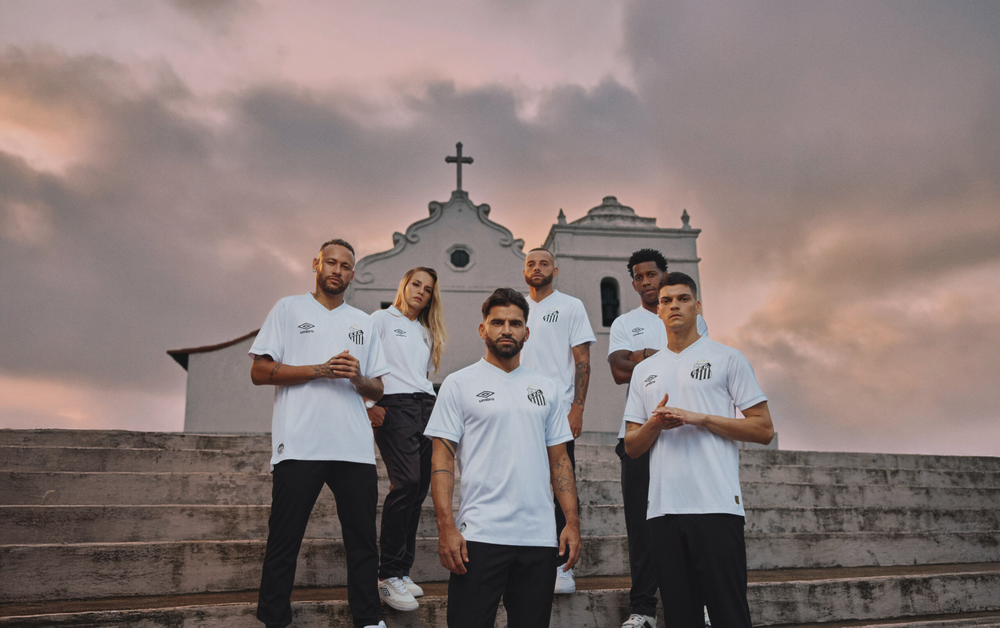

1912 - Fundação
Em 14 de abril de 1912, nascia o Santos Futebol Clube, destinado a se tornar um dos maiores clubes do mundo.

1956–1974 - Era Pelé
Pelé encantou o mundo com a camisa do Santos, levando o clube a conquistas históricas nacionais e internacionais.
2002 - A geração dos meninos da Vila
Robinho, Diego e companhia conquistam o Campeonato Brasileiro, encerrando um longo jejum de títulos importantes.

2011 - Tricampeão da Libertadores
Com Neymar e Ganso, o Santos venceu a Libertadores pela terceira vez, reafirmando sua grandeza continental.
Futuro e Tradição
O Santos continua revelando talentos e mantendo viva sua essência ofensiva e ousada, como manda sua história.
